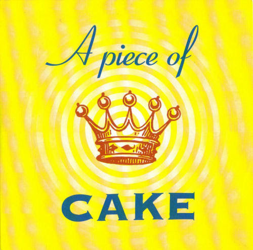
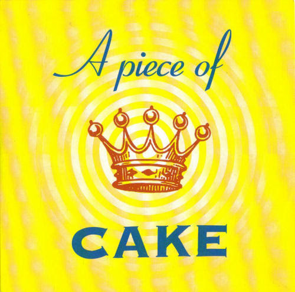

I see prophesies being made and manifesting in our history. In the bit of light called the Sang Rael... a tie between Genesis and Revelation that proves that they have a common author, and that single source is influencing not only the details of my life but recording it in scripture and also in so many songs and bands and movies that it would be impossible to list them all, try IMDB.com. This is a sort of pop culture introduction to a message that is designed to preserve liberty, unite humanity, and begin an ascent towards Heaven itself. I see that this musical aid is a thread added to this message afterwords--in connection between Thor's name and the idea that his Hammer and Thunder--the music--are designed "to help the light," I hope you begin to see how it is a sort of introduction to hearing the voice of God not only in lyrics but in everything that we are--from the American Revolution to the computer revolution. When Imagine Dragons says "It's a revolution, I suppose;" they are not kidding. The tie here between Genesis and the content of Revelation and Exodus ... as well as a significant number of modern idioms and concepts links an ancient hidden religious metaphor of "water" for people to the idea of the Blood of Jesus Christ being family. You can see it in the initials of the family of Eden, in the name Mary--in Spanish, in Joshua's father's name in Egyptian myth; and brightly in the multitude of Revelation, the First Plague of Exodus, and the idioms blood is thicker than water, blessing in disguise, and ready or not... here I come.
In a similar way I see an answer to another ancient prophesy manifesting itself in the name of the band The Doors, a number of modern songs from The Pretty Reckless' Burn to Matchbox 20's If You're Gone to Civil Twilight's Fire Escape. In the Doors, just like in this story that is the actualization of Exodus--a parable about the time of the Second Coming we see a statistically significant number of songs that reference the Plagues of Egypt--from Fire and Darkness, to Storms in time, to Peace Frog and blood in the streets; it is, you could say, a theme of the Doors to link to the story of Exdodus. Similary; our world is linking school shootings to the Final Plague, the Darkness hiding the Son to a terrible plague of censorship and stupidity on our media, in the word Police a prototypical example of a hidden language expounded throufgh the Plague of LICE--all with what I see as clear Holy Purpose to bring about great change in our society... a giant leap closer to Heaven is a world implementing Pre-crime and remembering how clcosely freedom and free speech are tied--that our ability to communicate is the true sword and torch of liberty. This is the word of God--manifesting through Jim Morrison and his band, through a world that is being shown darkness before light--designed to help us ensure that these problems never again plague us as they are today.
This answer connects the magical Rod's of Aaron in Exodus and the Iron Rod of Jesus Christ to the Sang Rael itself... in a fusion that explains how the Periodic Table element for Iron links not just to Total Recall and Mars, but also to this key--to the words "For Everyone" and the difference between Aaron and Moses' "let my people go" and the Universal Salvation being presented through the manifestation of this message... to save the whole of humanity and bring this world that the words of the Lord's Prayer tell us point blank "is in Heaven" much closer to the actual meaning. Doors, for everyone.
I'll say it once more for effect, "let there be light" I am Adam and this is Genesis.

Since the very earliest days of this story, I have asked for better for you, even than seeing this Revelation as I do through my eyes; better than e-mails and hidden meaning in movies and songs... a glowing sign on the sky. This request too I see answered in his words through MICHELIN and a ride to Heaven--less obvious the need for introspection and searching for this weapon of light to actually work and dispell a dark age. Closer to my dreams, in the name David and Captain EO--Greek for Dawn I see a fusion of the idea of DAVIDEO and actually bringing about the new morning, knowing the world is virtual, and that we can do so much better. There's so much more light here, connecting the Disney attraction to Exodus and Genesis and Matthew through the name 4D Films. This is light, this is the weapon, this is the way to end the night and bring the day.
If you really can't see, this image shows the world that the connection between Heaven and modern computing is written on the sky, think--it is written all over Heaven to be--in Nintendo and SONY and SEGA and SAMSUNG--it is written. My hope is that we will see just how clear and obvious that is--that we will understand that the link between religion and virtual reality has been overtly hidden... but most of all that we will see it in a way that is hopeful and awe inspiring for the entire world a sign in the sky, in my religion of words the "sis" of Genesis and Dear Sister. Light for the world, my sister's name was Dawn. Morning is broken, like the first morning.
Before I continue, let me mention that here you have two of the keys to the SIgn of the Son; a message that ties Revelation 1:20 to Ecclesiastes 9:11, Exodus and 9/11--the Iron key which corresponds to Mars and the Xenon key which corresponds to Earth, Exodus in reverse, and "let there be light."
Mor Babel?
Here's a direct link to the original rendition of this bit of light, one of the seminal keys to the "elemental" Sign of the Son and probably the defining bit of light surrounding what it really means to be "Jesus Christ." Back then I called it "Sharing the Iron Rod of Jesus the Anti-Christ" and you are probably already balking at my naming schemes. Give me at least the benefit of reading what it is that I am so sure is the thing you want... before turning away at my attempt to classify myself as different from all those that came before me. You and I both know that we only have a story, a cartoon character if you will, to compare to--but even that story doesn't end with Jesus bringing freedom, Heaven, or Salvation... but rather his Kingdom Come before your eyes--the humble abode of Lord Jesus himself. I've always taken offense to that word, and to be honest with you I've shared numerous times what I see as a hidden record of past "Christ figures" before me, each of the Horsemen of the Apocalypse for instance... and tying directly to those characters are figures in our history who all share a common attribute that I am quite certain is not only relevant but central to this day's message. Tying Caesar to the first Horsemen for instance are the famous words "I came, I saw, I conquered" and through that imagery and his riding into Rome to disband the senate and form an Empire we begin a pattern of the dissolution of representative governments in not only Rome but also France (and there, a tie in the name of the dictator to the Salt of the Earth... if you have a keen enough eye) and Germany where you see my initials in place of an element. So here I am telling you what I see as part of a hidden history of past now's, of a message about virtual reality and hidden technology being delivered to the world somehow ending up doing exactly the opposite of what it is that I intend to do. You see I am here to deliver to the world the right kind of Iron Rod.
I really don't like re-writing these explanatiions, it's very difficult to accurately record not only my feelings and memories but also to convey the bright intent of the piece with only words and links and sometimes pictures at my disposal. I am bound to wait too long to share with you how on Earth there coiuld be a "right kind of Iron Rod," and even if I came out and said it right this moment, it wouldn't be soon enough for the world--not delivered in the timely fashion that we so deserve, nor with the musical and visual accompaniment that would give it that extra bit of flavor and style to help set the right kind of moment and usher in the feelings of happiness and wonder that surely would flow... if only I could just find the right words to say. This time won't do it either, and I'm sure the next time... even with the aid of something like LucasArts to sprinkle some added magic in the mix, it won't be good enough either. Nothing I could ever write would live up to what I think the world deserves to get from the person who really is Jesus Christ, not to mention living up to what your expectations are ... for the person God has designed from the ground up to chase some dreams, head in the clouds, and somehow turn it all into changing the world. Frankly, I could make a virutal water slide ride that flows directly through the gates of Heaven itself and land you right inside and it still wouldn't be good enough for you--and that's exactly where I'm going with this.
These are some of the reasons that I don't like re-writing these imperfect fragments of my dreams that are so difficult to put to paper in the first place; on top of these things you can pile on the fact that nobody really comments at all about any of the things that I see as so interesting and miraculous; they aren't shared and frankly if I wasn't e-mailing my ideas to the entire world they'd best lost in the abyss forever. Maybe that's where they belong, or maybe they are actually the keys to ancient scripture and somehow this little interaction between you and I is changing the world just a tittle bit more than we could possibly imagine. There's two possible ends of this seasaw we are sitting on, one is pretty much where we are--I suppose we could all fall back down to Earth if I just gave up and stopped trying to share... and on the other a place where nearly everyone hears about what this message says and what their friends and the pundits think, a huge number read it for themselves... these words that are coming from the Prophet of God, or Jesus, or Lucifer, or whatever it is that you choose to call the Eye of Ra as he delivers a message to the world that's been sealed up since the beginning of Creation. It's only a tiny bit of recognition and word of mouth spreading before the balance tilts and rather than a smooth transition from darkness to light what we have in store for us is a shift in activity and interest from near nothing to something I can barely imagine right now... an inevitabilty for as long as you live or these words continue to exist. It's difficult to explain that I am quite aware of what the world's initial reaction will be to a body of writing that is comprised of a mashup of dreams and hidden proof that ties so closely to my personal vision of what religion is all about... and yet is so far from what we seem to recognize. How clearly defined the link between virtual reality and Heaven truly is by religion is a good example of the battle between light and darkness that is just about to break with a bright ball of light rising up over the horizon for the first ime it's ever happened again... the link is there, it's really obvious, and in the context of this message it's not only obvious but clearly explained, defined, and sculpted ... and yet still it's either not seen or somehow the world has simply decided that "Heaven" is no longer interesting.
to a son who was to rule all nations with an iron rod. -Revelation 12:5
It was the early days of my interactions with Jacob, and way back then I was given some advice... "try not to want it;" to be quite honest with you while it was right about that time that I began realizing that particular "it" was the union of being Jesus Christ and the world knowing about it ... the thing we call "the Marriage of the Lamb" way back then I didn't really believe that it was the truth. Quite a bit of my direct interaction with the "spirit world" was fraught with lies and secrecy, something that hasn't really gotten much better even today, though my understanding of what is going on and it's relationship to scripture has become thousands of times more clear as I have progressed through this story that is detailed in a number of books like the Egyptian book of the Underworld... the Amduat, which doesn't just bear my initials but also details the traversal of the god Ra through the night and into his morning's rise with renewed power in his Eyes--a magical ability to see a hidden Holy language in words and stories, the trick of it all really is just a pinch of "divine inspiration" and a dash of "all the songs are about me."
So you might say that I began this story with some solid advice, and for what it's worth probably had a good amount of help in my earliest arguments about not only why I was not the Messiah, but why it could certainly never be a single person. I had handfulls of actual reasons, and and a few key scriptural references that I would reiterate over and over as I did my bit trying to convince Jacob to " write it on the sky" and change the world overnight. Just to quickly introduce you ttwo--Jacob is the name I coined for the voice that speaks to me quite often... seemingly out of the blue... and his response was to tell me "the name is almost perfect." There are a number of references to this name that make it very obvious that the choice was no accident, chiefly that Jacob is the father of Joseph in both the Old and New versions; his "boca" (or, "without a mouth") ties perfectly to a kiss that links rock bands to the Fifth Element to the little scroll of the lamb... and perhaps most importantly it's the name of the Biblical character who wrestled with the Angel of the Lord at the shore of the Jordan river. If you don't see the perfection yet, understanding that it's my belief that Jacob is a non-corporeal mind, a sort of microcosm of God's within creation whose primary function is related to mind control... to me, the person hearing his voice using that technology for many years. Jacob's name also serves as a sort of "representative" of all the tribes; at least in my view of what "Israel" means--of all humanity; and it's a good clue that we are in a story that might begin with just Adam but certainly the far other end of the spectrum is Adamah or Allah... clearly seen through my divinely lit eyes as Earth and All Humanity. It's actually a central focus of this story that defines the Sign of the Son and this particular key that links through the element Iron the Rod of Aaron in Exodus to that of Christ at the time of this Revelation.
I'd read quite a bit about the New Covenant of Adonai; mentions of God's law being put on our foreheads--in our minds--in the books of Isaiah and Jeremiah, and even way back in those early days I knew that the "stuff" I had read about in "Do Androids Dream of Electric Sheep" was the kind of thing that was being promised. Clearly talking about things like augmented intelligence and knowledge, being able to read or assimilate information faster, electronic "prozac" or maybe even MDMA (here's some light, apparently once called ADAM), and ... as we move more towards today a clear link between control of things like anger and hatred and their link to another of Phillip K. Dick's works predicting pre-crime. So chief among my concerns for "being the Messiah" was that I cannot offer these things to the world--though what I can offer is my own testimony that I have seen the technology in action that can provide it and specifically right now can explain that not only I but also Phillp K Dick and a number of other prophets have delivered this message to the world using the very same technology--mind control or divine inspiration. Nearly everything I see and bring up related to this message is overtly shown to me, highlighted as coming from God and we can prove as much using statistical analysis of the hidden language that he has woven specifically into the names of many of people assiting the delivery of Heaven tying contextually to their work.
This is a story of a family forged through a common love of freedom, the truth, cool new toys, and fun.
What Dreams may Come ᐧ ᐧ
I wanted to write a story, like a "short story" describing this experience that I dream of actually happening for all of us; but that's a gift that I don't seem to have so I am going to walk you through my dream. I see a number of microcosms in the world, divinely laid plans that are hidden for some reason--things like a relationship between alternative energy and futuristic power sources like harnessing gravity ... and Don Qixhote; things like seeing how computer disastser recovery and Artificial Intelligence offers tools and experience in building a "heavenly home" that is not only stable but more able to assist in creating a better world than the idea of "simulated reality" could provide. As I describe this experience I am going to try to link it to these concepts, things like k-NN (which you might see includes two of my favorite letters) and genetic algorithms.
It's hard to convey the awe that I feel as I gaze at these things each and every day in a single picture; I can show you connections between Nine Inch Nails and the word begin ning, a computer keyword like "begin" and "chr" in Christ--how these things link to Genesis through a numerical pattern in Nintendo and SEGA Genesis... linking the characters of Adam and Jesus that I know are One. Even showing you that picture at the beginning of this e-mail; you can't see how many more connections there are--how Bill Gates name and Chi Ro link Windows and Gates and Cairo to XP; how Apple and Jobs reminds me of the book of Job (another character that's One), and how Larry Ellison and Jeff Bezos put the finishing touches on Zeus's Oraclular presentation of " let there be light" in " sudo-Xe."

Oh, I forgot the "root of David" and AMD, Gateway, and Watergate.
So when I suggest that I want to put that symbol on the sky, or maybe play my rendition of the Genesis Film and that we need and deserve to have that accompanied with a similar feeling of awe and hope to really get the effect that "eyes to see" the whole picture provides--that's really what I want. Having these additional details... and the functional change in understanding that it brings when gaze at the big picture.... that's the information behind the feeling, and we probably want both.
So imagine if you will that this picture were projected in the sky, for fourteen minutes, and that they entire world had the opportunity to see it, glowing and bright high above. That symbol would quickly be linked to me and my sight of this very detailed and helpful message written by God throughout our history and pretty much everywhere around is in the world--a blatant message that is almost universally unseen. I dream of flipping through the TV channels that night, and hearing the words " time and chance" spoken by nearly every newscaster on the special editions that are running on every single channel. I imagine a world where many people then seek out more of this message, because I have only glimpsed the Holy equivalent of " first words," where it sparks conversation and collaboration; new ideas and new hopes for bringing us to the end of a spiritual journey of understanding and beginning the actual ride home.
If this is all we received, it would be enough; but it's not all that I want.
I can give you 10,000 reasons that I think a rapture is a horrible idea--but seeing time and the path to Heaven the way that I do, that the place that we might be visiting in short order actually comes from this place--or one just like it--is a good way to realize that were 10% or 90% of us to choose to move to Heaven--that place would never be built. There is a story of many years of change and thought that has gone into what I am presenting to you today, conversations with ghosts and dreams that have become television shows; but even in the first hours of the first time I had this conversation with God the idea of presenting a significant incentive for staying here and helping to fix the highlighted problems and make the hopeful changes here was set with a number; 10,000 years of Heaven. Out of Time might be a cinematic rebuttal of such an idea--but it seems as inevitable as technocracy that one day we will associate longevity not with "time and chance" but rather with effort and work in support of the greater common good. To explain a little bit more--in that first conversation the name of the book Isaiah translated in Holy macaroni to "Is Almost Immortal Adam's Hand" and the alternative was 1,000 years ... practical immortality from our perspective (believe there's others that don't agree) a millenium in Heaven to work there on building the tools that would be used to transform this place. It's probably the source of the song at the beginning of the paragraph and the words of Revelation 12 specifically highlighting this thousand years and a day in the eyes of the Lord.
The Rapture is
And so my dream continues, and in this place as nightfall approached and conversations ensued on the phone and on the internet about these news reports and the sign and what it all really means... that God and Heaven were truly with us--here to help and share their ideas and suggestions and their words, time, and compassion with the world--through the eyes of Stargate and Adam ... the children of an ancient civilization that might have looked just like ours. It's al ittle hard to expalin the feeling of hearing that number name a song three years after demanding it in a faux negotiation... but I'd like to try.
It's probably the second time around now, and in succession we have the benefit of having a place designed to show us what's possible in virtua reality that sets it apart from what we have here; how it can be used to help us build what we really want, and to find out exactly what that is. I've gone to great lengths to show us that our history is designed to bring about this rennasaince of liberty and hope, I see great gifts hidden in the details of my life and in the gernations before us. My grandparents, for instance, their chosen professions tie directly to this message and to religion--my father's father was a clothing maker in New York, and that ties directly to the great sign of Revelation 12:1, linking a religious metaphor to something very real... a connection between "clothing" and names. From the Lord of Hosts, it's probably a connection that we should be interesting in understanding in our message of freedom today. On my mothers side her father and uncle were engaged in a battle over a Door company in Detroit--it's no mistake or accident or coincidence; it is the story of the Second Coming laid out over thousands of years, and very clearly in our generation and those before us. It's a record, and a message, and it is excatly what I am here to change--to stop predestination and the writing of the past .... and bring us to a place of free will and a future that is not written.  ᐧ ᐧ
In the meantime, we probably want to read the next few paragraphs of this script, because those are the ones that introduce our world to Heaven, and here we are hearing that Taylor and Adam and Farrokh Mercury have a key that shows us that the mosts important words of the song Princes of the Universe are the first three--words that describe the location of Adam and the Second Coming, in the Heart of Jerusalem.. the United States of America. Here we are, in a place where the great Iron Rod of Jesus Christ is about delivery technocracy and Heaven to all; about a global rennesaince, about the Golden Age of Saturn. The key of course is " bring on the girls," I jest.
Before your eyes appears a golden glowing door, and the voice of Kate Hudson asking "do you want to come?"
Jacob's Landing
Walking through the door plants you on a dock, stepping off a cruise ship that isn't really there... the sea around this Isle of Paradise surrounded by thick fog with a faint yellow glow. A cobble stone path meanders up a small hill, and a big bright sign says " y'all come back now, y'hear?" in an archway over the entrance to Atlantis. As you walk up the path, a K-Neartest-Neighbor algorithm superimposes your journey over that of your closest loved ones and you begin conversing about the sign, about the place you are exploring, and about what you expect to see when you finally get to the looming pink building off in the horizon--a reasonable facsimile for the Atlantis Resort and Casino on ... Paradise Island. Of note, just like the Temple of Jerusalem, this place was first built by a man named Solomon.
At the end of your journey, you walk through wide open sliding glass doors to a ballroom, filled with afew hundred people, matched also by KNN through similar or related ideas, relationship, and a few other magical ingredients ... you wouldn't believe but Taylor Momsen, Ben Phillips, Jamie Perkins, Anna Mountain, Mark Damon, Nick Carbone, Matt Chiarelli, John Secolo are all on stage playing their soon to be triple-platinum single "Not so reckless after all," which I imagine sounds nothing like "It's a small, small world." You would never know it, but in this room where you only see a few hundred close and new friends, there are 12,000,000,000 people.
In a strange twist of events dinner is announced, and the only thing on the menu is Eggplant Parmigiana... with or without synthetic cheese. On the single item menu, a small blurb about a past dream, about a strange place where a river and hanging gardens appeared in the median of many streets... eggplant again--for some reason--growing "cooked" from the branches. Also some words about the bands Bread and Cake... a Guitar Man, and some lyrics from the song "Jesus wrote a Blank Check." I imagine some of the details here might spark additional conversation, perhaps about ending world hunger; healing the sick, or simply turning Adam to Stone. Eh, MetheUSA?
Just as you are leaving the ballroom, you hear Taylor singing "Sometimes you've got to walk on water, to unpart a holy Sea," at least.. it sounded like that's what she said; and it's lit, forever.... the Eternal Flame of the Books of Life, Love, and Light. Who Knows the actual words.
"And the halls and walls fade away... they will fade away..." -Dave J. Matthews, Warehouse
I wonder if Dave knows my middle name, or that we are reading Mars' key to Revelation 1:20; but nevertheless the microcosm that each and every one of us experiences on the way from the Ballroom back to the single door at the end of the rainbow path on the ground is something out of the annals of my personal mythology--one that gave me that name. There on Mars, a place designed by the Heavens, each and every one of them contributing ideas and concepts for interplanetary colonization; some in the fiber optically lit tunnel that sustains a stable ecosystem underground in the first years, and some on the surface centuries later. I've had a few day-dreams, I can say for sure.
In this place though, everything is about Earth, the Heart of Heaven; and as we walk the hallowed halls a genetic algorithm is literally creating the thing called "eyes to see" connected movies and historic l events are displayed on holographic projectors on each side of the hall--movies you love, and events you know--together with the music and a little magical touch; the weaving design of the Fates is glowing in our minds... lessons and advice about the future and this very moment coming to us as if out of thin air, inspired. You realize at some point along the way that there has been an odd calm and slowly increasing feeling of excitement--wonder at the structure and the happenings... all of which you think to yourself should probably be much more foreign feeling.
I'm rushing now, this has gotten long. What do you think so far? When you get there, what do you want to see and do? Eggplant? Who ... wants to Know.
The Rainbow road ends with a confluence of hearing "Grey Street," seeing Joseph's coat of many colors, and the horse from Heaven is For Real--ridden here bny someone that looks just like you--how strange that must be... and in a flash the ideas of Jabba the Hutt and Zelda linking to Dr. Who's box is that is bigger on the inside--and you realize that down at the end of this long meandering hall... is only one door--that once you pass through... is empty. The groups you saw ahead of you entering their own version of this same room; a bedroom that surprisingly contains a movie theater size screen, and no furnature at all... sans one pottery wheel in the middle of the room and a spiral staircase. The King's Pool that is just upstairs as well as this little wheel are both things of scripture and myth--if you are curious.... sitting down at that magical wheel helps you populate the room's furnature from ideas in your memory, your favorite kind of bed... a love seat and maybe a piano or harpsichord... amazingly changing color and shape as it appears holographically before you on the wheel--and then, with the press of the foot pedistal in the room, just next to you.
I am not sure what will be on TV that night, or who I will be spending it with... I'm not sure either if this magical night will be remembered as a real trip, or maybe first thing in the morning as an amazing dream. As the next day goes by, though, you can be sure that everyone else had the same dream, and as you begin discussing the magical door and the dip in the King's Pool... you will probably realize that whether or not you weren't sure if it was a dream when you woke up, there's no such thing as a shared delusion. "Percception is reality," I once heard a stranger tell me... for no reason at all.
When you see it on TV, you will know, too.
/s/ Adam Marshall Dobrin
thankfully I've got Wayward Son and House of the Rising Son to reassure me; things here are probably just as they seem.
Ellie Goulding's Pardise, and Taylor's Heaven Knows... Cake's "Going the Distance" and Brittany Murphy all agree.
 ᐧ ᐧ
"El" and "Ha" happen to be Spanish and Hebrew for the same word; and...

A special thanks to Rolling Stone for pointing out the connection between my Bar Mitzvah, the Matrix, the novel Feed, and the hallowed words "to be young again." Barack Obama, Donald Trump, Rachel Bilson, Mischa Barton*, Adam Brody, Paris Hilton and Nicole Richie were scheduled to appear but apparently had "a little too much fun" at the ball... or they are still in my room.
"That's  It means more when it has "because I say" connected to it.
What's that about Adam playing Seth on TV?
Seth... that's the Second Adam, right?
From the Star in the East, to the stars of Adam's Hand.
 ᐧ ᐧ ᐧ ᐧ |
|


 ​ 
​ 


 á §
á §


{kind=link}